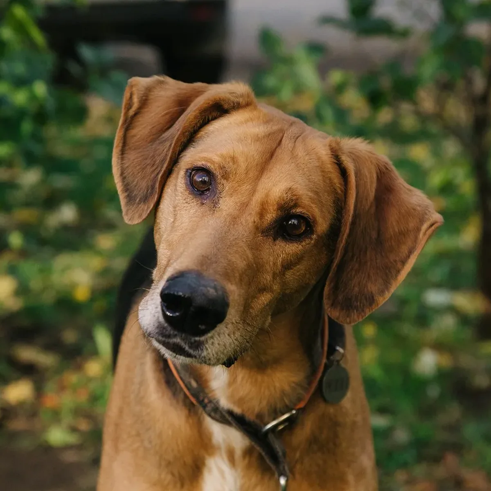

Tudo sobre cachorrinhos.
Um cachorro saudável precisa de comida certa, água fresca, passeios e carinho. Filhotes só passeiam com as vacinas em dia.
Ofereça ração adequada à idade e ao porte do cão e deixe sempre água limpa à disposição.
Passear gasta energia, fortalece os músculos e ajuda o cão a conviver com outras pessoas e animais.
Escove os dentes só com pasta para cães: a pasta de dente de humans pode fazer mal a eles.
Cada raça tem um porte e um jeito. Algumas das mais queridas pelos sócios do clube:

Veja algumas dicas importantes:
Quer aprender mais sobre cachorros?
Clique aqui para saber mais sobre cachorrosClube Patinhas - Joinville, SC
E-mail: contato@clubepatinhas.com.br
Site desenvolvido para fins educativos.